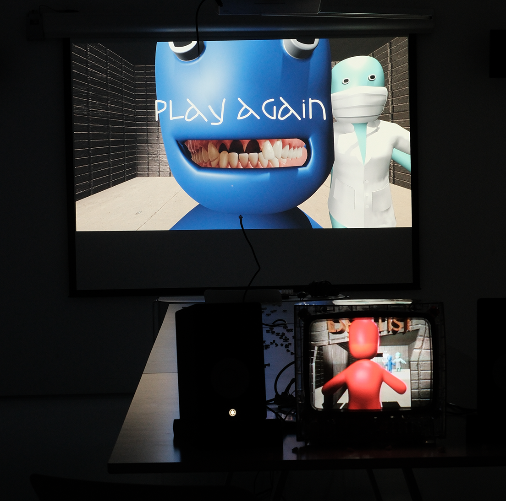
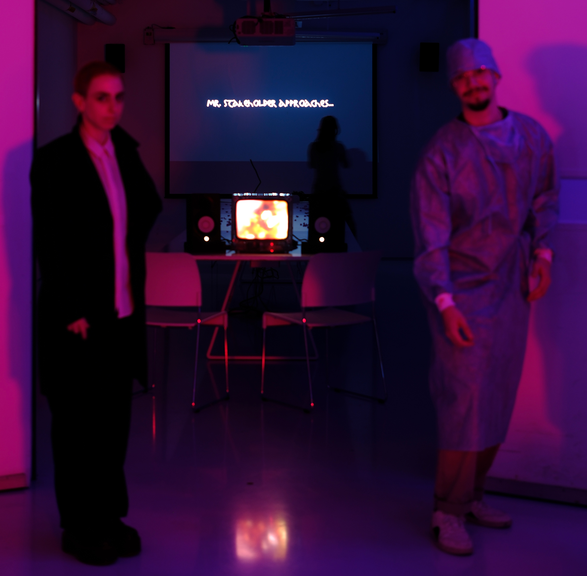
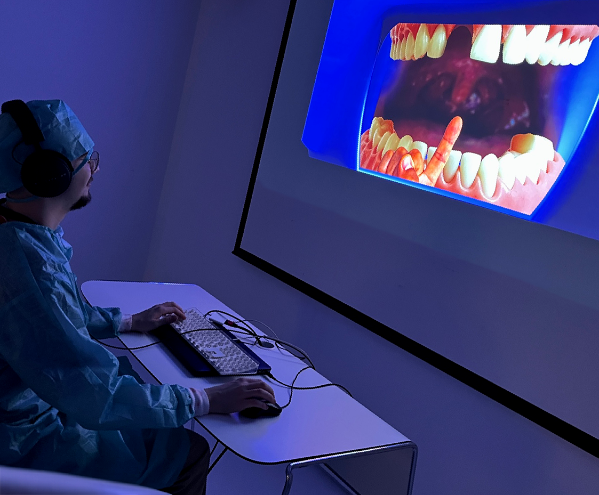

vec2 pos; uniform float time; uniform vec2 resolution; void main(void) { vec2 pos = 2.0*gl_FragCoord.xy / resolution.y - vec2(resolution.x/resolution.y, 1.0); vec3 col = 0.5 + 0.5*cos(time+pos.xyx+vec3(0.,2.,4.)); gl_FragColor = vec4(col,1.0); }
<- backMoMI - NYC
I got the opportunity to showcase my work at the Stories in Motion exhibition at the MoMI in December 2023. Here, I worked on an installation along with Terry Kahn and Jonny Hopkins that consisted of one animated film looping on a deconstructed CRT, and videogame displayed on a projector.
Our installation covered the narrative of a dentist and a series of unfortunate events surrounding one dental surgery. As wanderers of the museum stumbled upon our project, they were offered printed teeth as condolences for what they were about to experience. The one handing these teeth out was none other than myself, dressed in proper dentist attire.
movingimage.us
